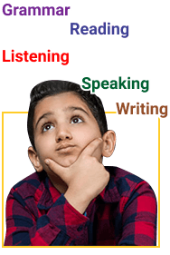

General Descriptions
Children’s English (CE) adalah program bahasa Inggris umum (General English) khususnya untuk siswa TK, SD, & SMP. Program ini bertujuan untuk menumbuhkan minat mereka dalam belajar bahasa Inggris serta mengembangkan kemampuan mereka dalam Listening, Speaking, Reading, Writing, & Grammar.
Dengan kurikulum yang komprehensif, siswa nantinya diharapkan tidak hanya bisa mengatasi pelajaran bahasa Inggris mereka di sekolah, tetapi juga bisa berbicara dan menulis dengan benar, sehingga mereka bisa mengembangkan kehidupan pribadi dan sosial mereka dengan baik.

Types of Children English
Bahasa Inggris untuk anak-anak (CE) ini terdiri dari 4 program, yaitu:
General English (GE) adalah program bahasa Inggris yang paling populer untuk siswa mulai usia TK – SMA. Karena diselenggarakan secara rutin 4 kali (term) setahun, maka program GE ini juga disebut Regular Program. Untuk ikut program yang banyak levelnya ini, calon murid harus ikut Placement Test online atau offline terlebih dahulu agar bisa masuk di kelas yang sesuai dengan kemampuan mereka.
Term atau periode kelas GE adalah sebagai berikut:
Term 1 : January – March (pendaftaran dimulai bulan Desember)
Term 2 : April – June (pendaftaran dimulai bulan Maret)
Term 3 : July – September (pendaftaran dimulai bulan Juni)
Term 4 : October – December (pendaftaran dimulai bulan September)

Term atau periode kelas GE adalah sebagai berikut:
Term 1 : January – March (pendaftaran dimulai bulan Desember)
Term 2 : April – June (pendaftaran dimulai bulan Maret)
Term 3 : July – September (pendaftaran dimulai bulan Juni)
Term 4 : October – December (pendaftaran dimulai bulan September)
This is some placeholder content the Home tab's associated content. Clicking another tab will toggle the visibility of this one for the next. The tab JavaScript swaps classes to control the content visibility and styling. You can use it with tabs, pills, and any other .nav-powered navigation.This is some placeholder content the Home tab's associated content. Clicking another tab will toggle the visibility of this one for the next. The tab JavaScript swaps classes to control the content visibility and styling. You can use it with tabs, pills, and any other .nav-powered navigation.This is some placeholder content the Home tab's associated content. Clicking another tab will toggle the visibility of this one for the next. The tab JavaScript swaps classes to control the content visibility and styling. You can use it with tabs, pills, and any other .nav-powered navigation.This is some placeholder content the Home tab's associated content. Clicking another tab will toggle the visibility of this one for the next. The tab JavaScript swaps classes to control the content visibility and styling. You can use it with tabs, pills, and any other .nav-powered navigation.This is some placeholder content the Home tab's associated content. Clicking another tab will toggle the visibility of this one for the next. The tab JavaScript swaps classes to control the content visibility and styling. You can use it with tabs, pills, and any other .nav-powered navigation.
This is some placeholder content the Home tab's associated content. Clicking another tab will toggle the visibility of this one for the next. The tab JavaScript swaps classes to control the content visibility and styling. You can use it with tabs, pills, and any other .nav-powered navigation.This is some placeholder content the Home tab's associated content. Clicking another tab will toggle the visibility of this one for the next. The tab JavaScript swaps classes to control the content visibility and styling. You can use it with tabs, pills, and any other .nav-powered navigation.This is some placeholder content the Home tab's associated content. Clicking another tab will toggle the visibility of this one for the next. The tab JavaScript swaps classes to control the content visibility and styling. You can use it with tabs, pills, and any other .nav-powered navigation.This is some placeholder content the Home tab's associated content. Clicking another tab will toggle the visibility of this one for the next. The tab JavaScript swaps classes to control the content visibility and styling. You can use it with tabs, pills, and any other .nav-powered navigation.This is some placeholder content the Home tab's associated content. Clicking another tab will toggle the visibility of this one for the next. The tab JavaScript swaps classes to control the content visibility and styling. You can use it with tabs, pills, and any other .nav-powered navigation.
This is some placeholder content the Home tab's associated content. Clicking another tab will toggle the visibility of this one for the next. The tab JavaScript swaps classes to control the content visibility and styling. You can use it with tabs, pills, and any other .nav-powered navigation.This is some placeholder content the Home tab's associated content. Clicking another tab will toggle the visibility of this one for the next. The tab JavaScript swaps classes to control the content visibility and styling. You can use it with tabs, pills, and any other .nav-powered navigation.This is some placeholder content the Home tab's associated content. Clicking another tab will toggle the visibility of this one for the next. The tab JavaScript swaps classes to control the content visibility and styling. You can use it with tabs, pills, and any other .nav-powered navigation.This is some placeholder content the Home tab's associated content. Clicking another tab will toggle the visibility of this one for the next. The tab JavaScript swaps classes to control the content visibility and styling. You can use it with tabs, pills, and any other .nav-powered navigation.This is some placeholder content the Home tab's associated content. Clicking another tab will toggle the visibility of this one for the next. The tab JavaScript swaps classes to control the content visibility and styling. You can use it with tabs, pills, and any other .nav-powered navigation.
Testimonials

Mama Clarissa- Regular Program (2018-present)
Semenjak anak-anak les di SPELL dari 3 tahun lalu, kosakata Englishnya semakin bertambah, dan anak-anak berani untuk bicara bahasa Inggris baik di rumah maupun di kelas karena didukung oleh guru-guru yang ramah dan pintar mengambil hati anak-anak untuk mau berbicara. Guru-gurunya pun mempunyai metode yang menarik sehingga anak-anak tidak bosan.

Joshua
“Belajar bahasa inggris di SPELL ELC memberikan pengalaman yang sangat terbaik.”
Joshua
“Belajar bahasa inggris di SPELL ELC memberikan pengalaman yang sangat terbaik.”